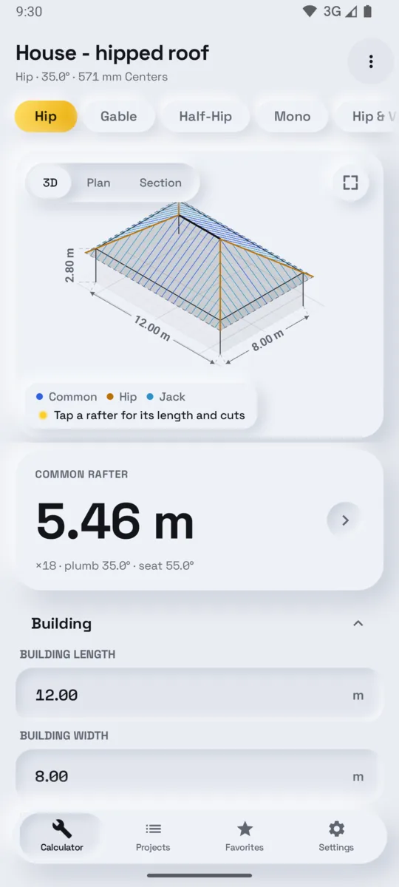
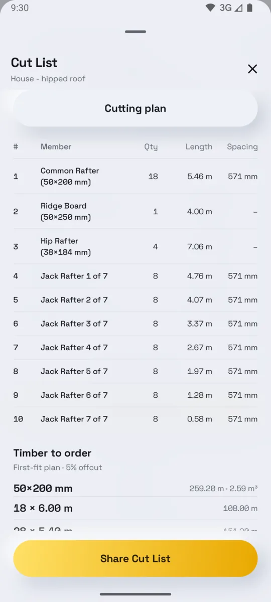
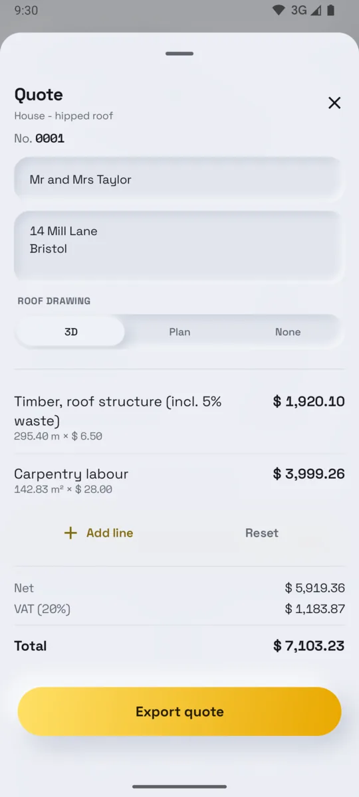
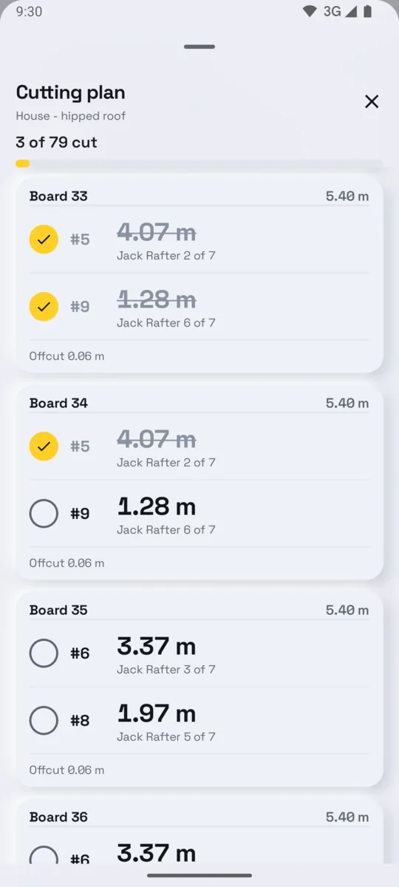
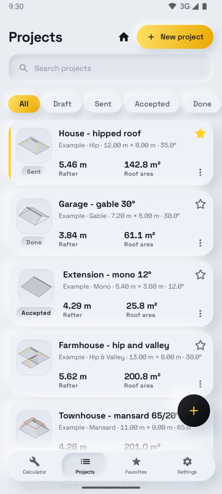

Set out the roof
Seven roof shapes, from mono to mansard. Tap a rafter on the drawing for its length and cuts.
Roof framing calculator for Android
Dachwerk works out the roof framing from a few measurements: every rafter with its length and cuts, the cut list for the saw and the quote for the customer. Right on site, with no signal.
From tape measure to saw
Pick the roof shape, type in the building. Dachwerk draws it to scale and recalculates every piece the moment a measurement changes.

Seven roof shapes, from mono to mansard. Tap a rafter on the drawing for its length and cuts.

Every piece numbered, every jack rafter at its own length, and the timber order by section size.

Your letterhead and prices, and a drawing of the roof the customer can actually read.
What it calculates
Common, hip, valley, jack and upper rafters, with pitch, rise, run, roof area and the lengths of eaves, verges, ridges, hips and valleys.
Plumb cut, seat cut, cheek cut and birdsmouth depth, with the numbers right on the drawing.
The pieces are packed onto the stock lengths your merchant sells, with the saw kerf counted and the offcut shown.

Timber, waste, labour and VAT on your own letterhead, straight from the roof. Add items from your price book; the invoice takes everything over from the quote.

0 bars
In the loft, on the scaffold, in flight mode. Nothing waits for a server.
0 trackers
No account, no ads, no analytics. Projects and customers live on your phone and nowhere else.
27
Metric or imperial. Pitch in degrees, percent or rise-in-run.
More than a rafter table
Pricing
No subscription. No trial that runs out.
€0
With no limit, on every roof.
Once
The price is shown in Google Play, in your currency.
From the fourth roof on, free quotes and invoices still go out – with a short “Created with Dachwerk” line at the foot.
Questions
Dachwerk is a roof framing and rafter calculator app for Android. From a few measurements it works out every rafter with its length and cuts, draws the roof to scale, writes the cut list and timber order, and produces a quote and invoice for the customer. It is made for carpenters, roofers, timber framers and builders.
Gable, mono-pitch (lean-to), hip, half-hip (jerkinhead), hip-and-valley (L-shaped), gambrel and mansard roofs.
Yes: common, hip, valley, jack and upper rafters. Every jack rafter is listed at its own length rather than as a range, with the plumb cut, seat cut, cheek cut and birdsmouth depth.
Yes. The calculator, the drawings, the cut lists and the PDFs all work without signal. A connection is needed only to complete an optional purchase through Google Play.
The calculator, drawings, cut list, timber order and your letterhead are free with no limit. On your first three roofs, quotes also go out the way Pro sends them. From the fourth roof, quotes and invoices carry a short “Created with Dachwerk” line until you unlock Pro.
Pro is one purchase. Not a subscription.
Yes. Timber, waste, labour and VAT are priced straight from the roof, on your own letterhead with your logo. Add your own items from a price book. The invoice takes the customer and items over from the quote. Send either as a PDF by email or messenger, or print it.
No. There is no account, no ads, no analytics and no tracking. Your projects, customers and business details stay on your phone. Read the privacy policy.
Not at the moment. Dachwerk runs on Android phones and tablets with Android 8.0 or later.
No. Dachwerk does geometry and planning, not structural engineering. Check the results against local building codes, structural requirements and manufacturer specifications.
Free on Google Play for Android phones and tablets.
Dachwerk does geometry and planning. It is not structural engineering.